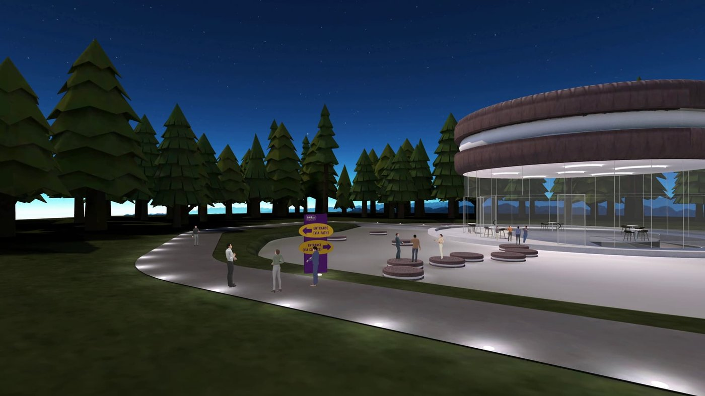

XR / Digital Innovation
Simoja — Digital Innovation Centre
Created and lead Mondelēz's VR innovation hub — built on Meta Quest and Arthur — hosting 1,000+ employees for design reviews, consumer research, and cross-site collaboration. Delivered an 8+ NPS and cut 3D concept design from weeks to hours (featured in a public case study with Meta and Arthur).